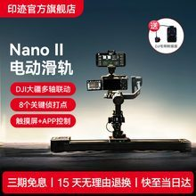
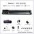
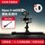
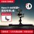
| 材质 | 铝合金 + 碳纤维（阳极氧化） |
|---|---|
| 可选长度 | 460 / 660 / 860 mm（轨道规格见对比表） |
| 水平承重 | 7 kg（460/660）· 5 kg（860） |
| 垂直承重 | 3.5 kg（460/660）· 2.5 kg（860） |
| 运行噪音 | 约 37 dB / 米 |
| 平移轴速度 | 0.1°/s – 180°/s |
| 滑移轴速度 | 1 µm/s – 140 mm/s |
| 供电 | PD60W / NPF 锂电池 |
| 兼容 | 单反/微单/手机；大疆 RS 系列（配转接底座） |
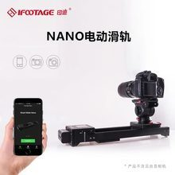
| 重量 | 2.15 kg |
|---|---|
| 轨道规格 | 421 × 108 × 71 mm |
| 行程 | 桌面约 200mm · 脚架约 400mm |
| 水平承重 | 3.5 kg（桌面）· 2.5 kg（脚架） |
| 垂直承重 | 2.0 kg |
| 电机 | 无刷直流电机（BLDC） |
| 电池 | 750 锂电 / F550·F750·F970；Type-C 充电 |
| 控制 | IPS 触控屏 + MOCO App（手机/相机模式） |
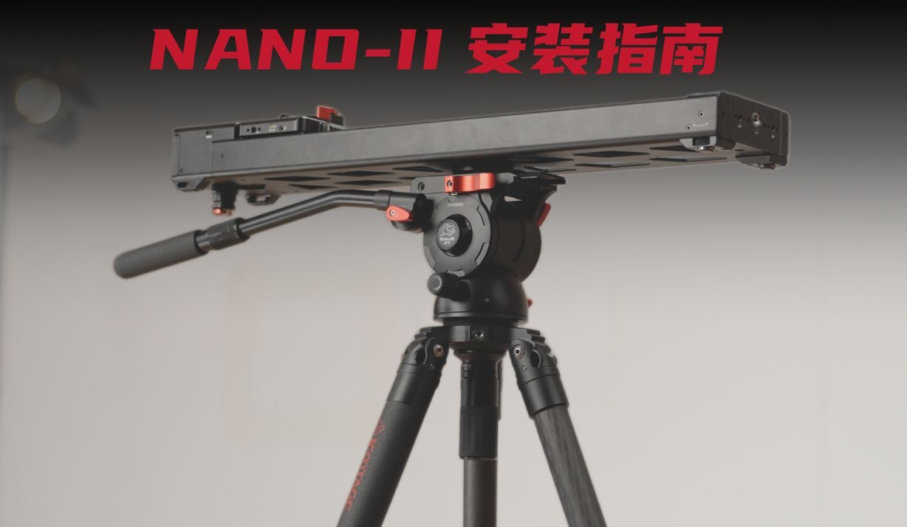
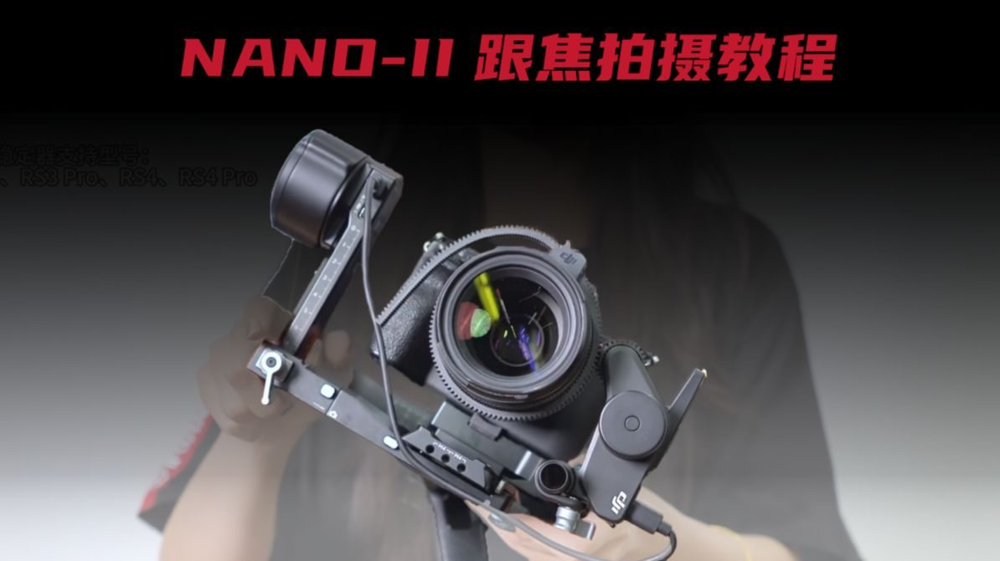
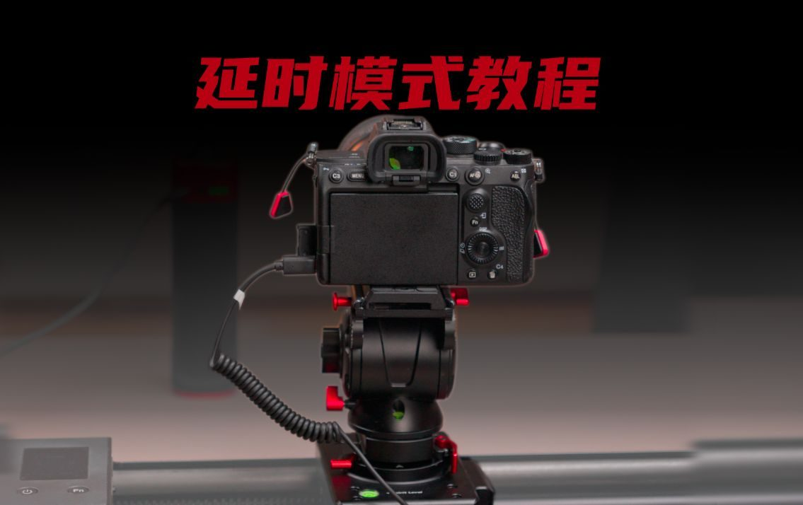
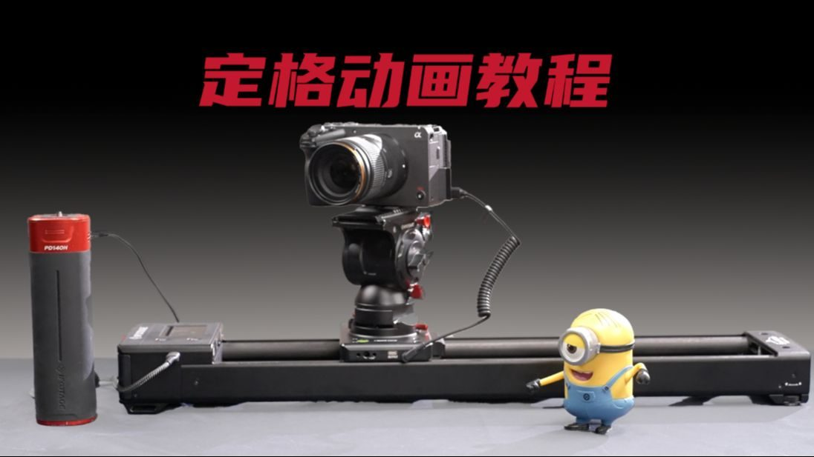
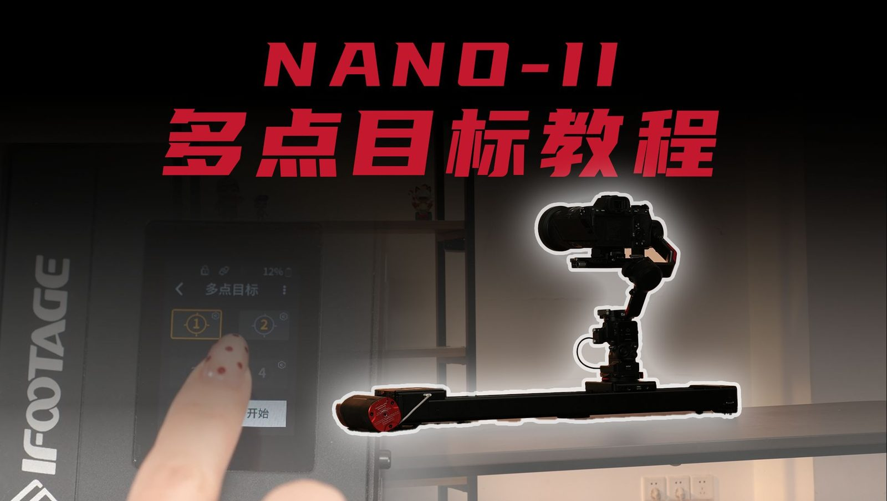
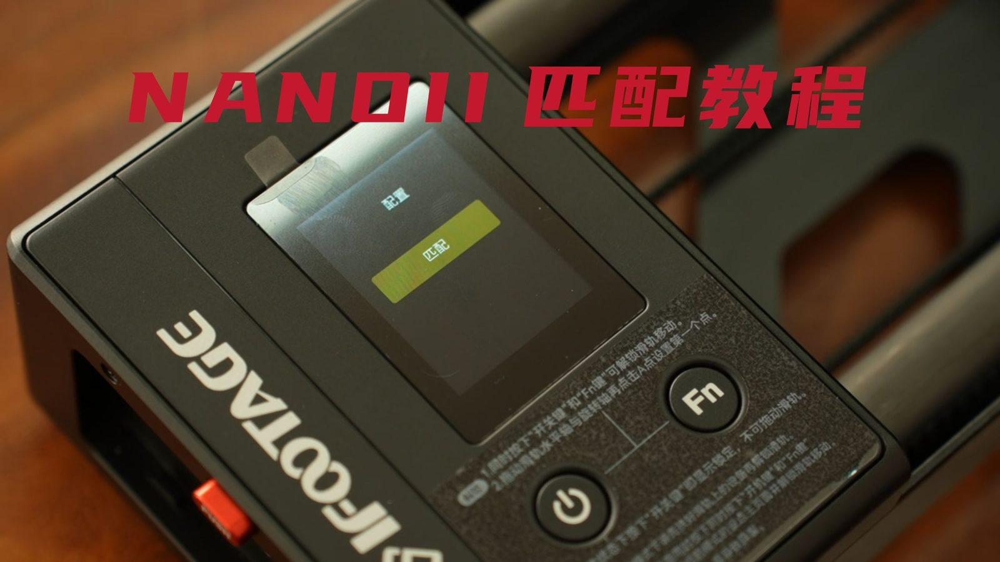
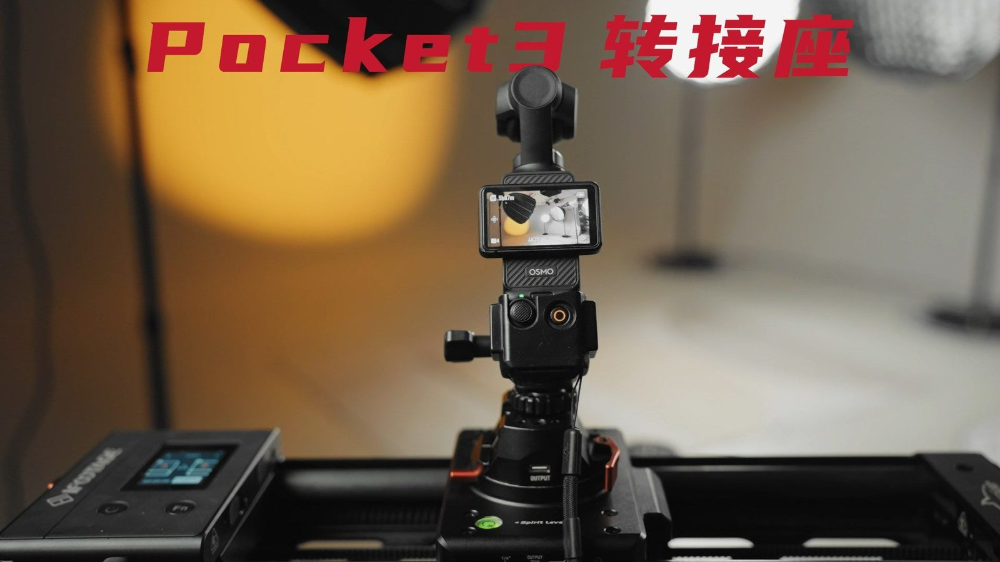
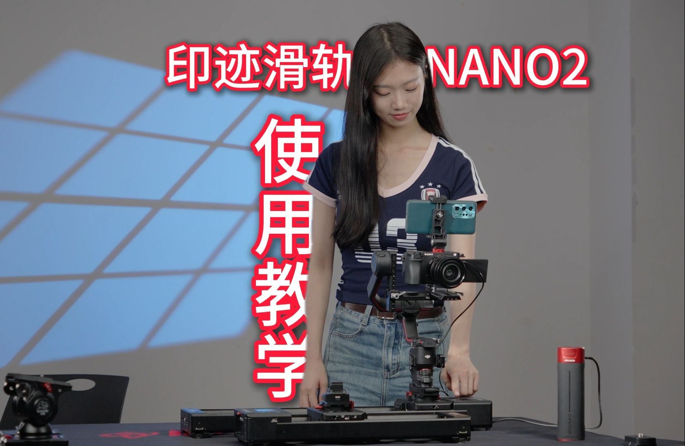
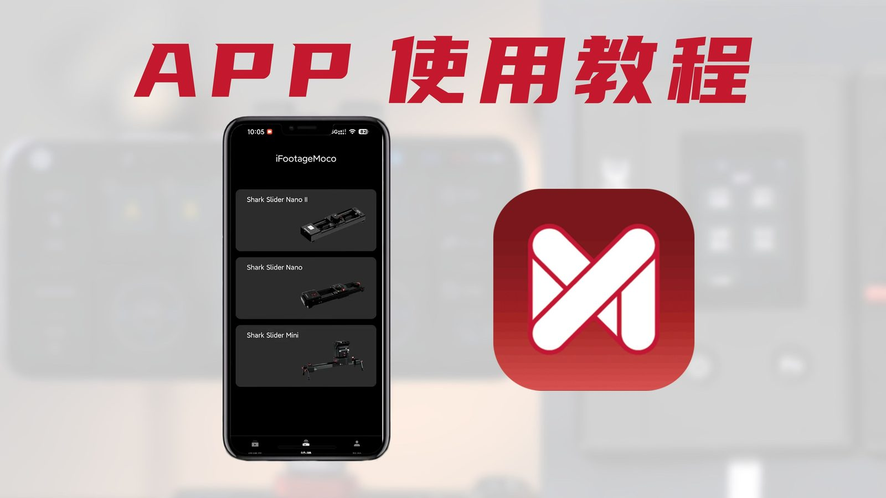
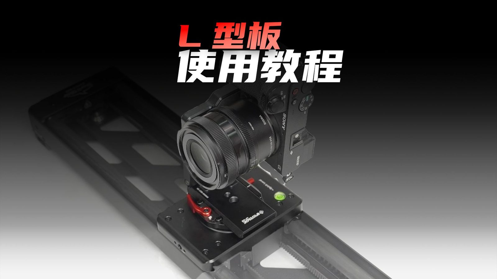
| 对比项 | Nano II 二代 | Nano 一代 |
|---|---|---|
| 定位 | 进阶/专业级双轴电控 | 入门便携一体化 |
| 重量 | 2.8 – 3.4 kg（按长度） | 2.15 kg |
| 材质 | 铝合金 + 碳纤维 | 铝合金主体 |
| 可选长度 | 460 / 660 / 860 mm | 单一规格（约 421mm） |
| 滑移行程 | 233 / 433 / 633 mm | 桌面 200 / 脚架 400 mm |
| 水平承重 | 7 kg（460/660）· 5 kg（860） | 3.5 kg（桌面）· 2.5 kg（脚架） |
| 垂直承重 | 3.5 kg（460/660）· 2.5 kg（860） | 2.0 kg |
| 滑移速度 | 1 µm/s – 140 mm/s | 0.15 mm/s 起（微米级） |
| 供电 | PD60W / NPF 电池 | F 系列锂电 / Type-C |
| 大疆联动 | 支持（配转接底座） | 可搭配（重心注意） |
| 屏幕 | IPS 触控屏 | IPS 触控屏 |
| 软件 | MOCO App + 蓝牙遥控 | MOCO App |
| 规格 | Nano II-460 | Nano II-660 | Nano II-860 |
|---|---|---|---|
| 轨道尺寸 (长×宽×高) | 463.5×133×99 mm | 663.5×133×99 mm | 863.5×133×99 mm |
| 滑移行程 | 233 mm | 433 mm | 633 mm |
| 水平承重 | 7 kg | 7 kg | 5 kg |
| 垂直承重 | 3.5 kg | 3.5 kg | 2.5 kg |
| 机身重量 | 约 2.8 kg | 约 3.1 kg | 约 3.4 kg |
| 适用场景 | 桌面/微距/延时 | 常规运镜/访谈 | 大范围横移/单人直播 |
| 🎬 滑轨主体 | *1 pcs |
| 🎒 包包 | *1 pcs |
| 🔌 Nano II-RS 转换座 | *1 pcs |
| ⚡ 快装板 | *1 pcs |
| 📡 信号连接座 | *1 pcs |
| 🔋 PD 60W 充电器 | *1 pcs |
| 📱 冷靴座手机夹 | *1 pcs |
| 🔗 快门线 | *6 pcs |
| *附赠 1 个六角小扳手 | |
| 接口 | 品牌 | 支持型号 |
|---|---|---|
| N3 | Canon（佳能） | R5、7D、7D II、6D、6D II、5D、5D MARK II、5D MARK III、5D MARK IV、5DS、5D0、40D、30D、20D、10D、1D、1DX、1DX MARK II/III/IV、EOS-1V |
| S2 | Sony（索尼） | a7、a7 II、a7 III、a7s、a7s II、a7s III、a7R、a7R II、a7R III、a7R IV、a9、a9 II、a6600、a6500、a6400、a6300、a6000、a5100、a5000、a3000、HX300/HX400/HX50/HX60、RX100 II/III、a58、NEX-3NL |
| L1 | Panasonic（松下） Leica（徕卡） | 松下：DMC-FZ250/FZ50K/S、DMC-FZ30/K/S、DMC-FZ20/K/S、DMC-FZ200、DMC-FZ100、FZ1000、L1/L10/LC1、G10/G9/G9L/G9S/G85/G3/G2/G1/GF1/GH5/GH4/GH3/GH2/GH1/GX1/G5/G8X/GX7 徕卡：DIGILUX2、DIGILUX3 |
| DC2 | Nikon（尼康） | D750、D780、D7200、D7100、D7000、D610、D600、D5600、D5500、D5300、D5200、D5100、D5000、D3300、D3200、D3100、D90、DF、P7700、Z5、Z6、Z6 II、Z7、Z7 II |
| E2 | Fujifilm（富士） | X-T1、X-E3、X-E2、X-E25、X-A10、X-A7、X-A3、X-A2、X-A1、X-M1、X02、XQ1、X-T20、X-T10、X-T200、X-T100、X70、X30、X100F、X100T、FINEPIX S1、X-PRO2、GFX50S |
| DC0 | Nikon（尼康） | D850、D810、D810A、D800、D800E、D700、D500、D6、D5、D4、D45、D300、D300S、D3、D3S、D3X、D2、D2H、D2X、D200、D100、D1、D1H、D1X、F100、F90、F90X、N90S、F6、F5 FUJIFILM：S5 PRO、S3 PRO KODAK：DCS-14N |
| 产品型号 | TC5S | TA6S | TC6S | TC7 | TC9 |
|---|---|---|---|---|---|
| 自重 | 1.94 kg | 2.34 kg | 1.91 kg | 1.86 kg | 2.36 kg |
| 材质 | 碳纤维 | 航空铝合金 | 碳纤维 | 碳纤维 | 碳纤维 |
| 节数 | 4 | 3 | 3 | 3 | 3 |
| 收拢高度 | 525 mm | 635 mm | 635 mm | 670 mm | 710 mm |
| 最高工作高度 | 1500 mm | 1650 mm | 1650 mm | 1550 mm | 1650 mm |
| 最低工作高度 | 175 mm | 195 mm | 195 mm | 180 mm | 195 mm |
| 最大承重 | 6 kg | 6 kg | 8 kg | 9 kg | 12 kg |
| 脚管角度 | 22°/55°/80° | 22°/55°/80° | 22°/55°/80° | 22°/55°/77° | 22°/55°/77° |
| 最大管径 | 30.2 mm | 30.2 mm | 30.2 mm | 30.2 mm | 34 mm |